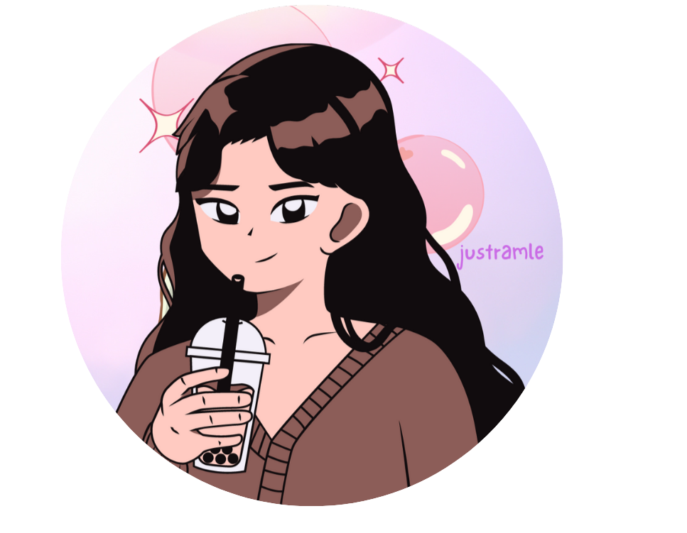

Background
My journey into the world of coding began when I was young. I had the opportunity to explore various beautiful websites online,
and I was so desire to create my own blog website—a platform where I could freely express my ideas and creativity. During my college, I began to explore coding skills,
experience various programming languages and frameworks, each offering a unique knowledges, it's also enabled me to expand my horizons in design, allowing me to diverse multiple projects with confidence.
My journey in coding has been ups and downs, I make a lot of mistake but I also value my learning mistake experience, it pushs my boundaries to make me believe that everything is possible with decication.